|
SummaryOur website has been designed using HTML, CSS and JavaScript programming languages. This project has 6 html files, 8 CSS files and 2 JavaScript files. Consequently, we have managed to come up with a fully functioning webpage with valuable information and Python programming language related questions. The site also has JavaScript files which allow for dynamic content as well as interactive contents like quizzes. We strive to create an environment that supports the whole learner offering complete explanations, applications that are real and challenges that are thought-provoking around Python programming. We are keen on accessibility hence our site is user friendly enough for those who want to learn at their own time. Move across modules smoothly, monitor your progress and become the best Python programmer you can be. |
ChallengesEffective cooperation between team-members was one of the major difficulties we faced when conducting the project. At first, we split projects to share them separately which led to problems with contradictory code changes especially in the places where joint working was possible. The resultant changes were highly contradictive which led to much time wastage reconciling the same. We quickly realized that we required a solid collaboration tool, and that is why we used GitHub, which turned out to be an essential solution. Our teamwork was smooth on GitHub and there were no more hiccups. Version control and collaborative functionality of the platform enabled us to see changes, merge our code changes easily and have the single codebase as a whole. Initially, we faced various challenges. However, by utilizing GitHub’s effective collaboration features, we were able to standardize and speed up our development process while promoting teamwork, leading to a single product with high quality. |
 |
Learned informationThis has been an excellent opportunity for us to effectively master programing languages such as HMTL, CSS and JavaScript for development of the whole site. The most support we were provided with was collaborating and using online resources like YouTube and Google to find and learn as much as possible for the project. Our experience has been deepened in the area of CSS and JavaScript as we have developed our website. When moving through CSS, we learnt everything about properties, selectors as well as style techniques making it possible for us to build beautiful websites. Our research on JavaScript also enabled us to incorporate interactivity and dynamic features in our website. With such kind of knowledge of web development, we are now able to make more attractive and interactive websites compared to the past time. As such, we are eager to learn more and discover what lies beyond in this field. We have increased our knowledge concerning various web development intricacies as well as learnt important teamwork skills during this project. Together we have been able to deal with obstacles, get alternative views and create a site better than anybody would expect initially by putting together our personal qualities. In Conclusion, this is the fourth assignment in the development of team building, communication and also technical skills. The pride we feel is rooted in what we have done, where we are coming from, individual or social growth – past to present. That is all that it takes to be prepared for other undertakings since we’ve accumulated experience as a team working in this web-development project. |